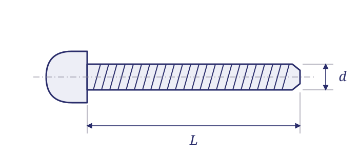

// TECHNICAL RESOURCES
Machine Screws.
A family reference for specification-controlled hardware. Identify the relevant series and the details needed to source the required part.
// DIMENSIONS & PART IDENTIFICATION
Machine-screw length and thread diameter

Schematic only; not to scale. Letter labels are keys for this illustration. Use the applicable part specification for dimensions, tolerances and measurement conventions.
// IDENTIFICATION
Identify the head, recess and thread.
A pan head sits above the bearing surface. A countersunk head fits a matching seat; the included angle is part of the requirement. A drilled fillister head adds another configuration that must be preserved.
Keep coarse and fine thread references distinct. MS51957 and MS51958 are separate series; MS24693 uses a 100-degree head while MS51959 is associated with an 82-degree head.
// REFERENCE TABLE
Series in this family
No matching entries. Clear the filters or try a shorter search.
| Series | Product description | Family | Resource |
|---|---|---|---|
| MS24693 | 100° flat cross-recessed machine screws | Machine screws | Read guide → |
| MS35190 | 82° flat cross-recessed machine screws, coarse thread | Machine screws | |
| MS35191 | 82° flat cross-recessed machine screws, fine thread | Machine screws | |
| MS35206 | Pan head cross-recessed machine screws, carbon steel, UNC | Machine screws | Read guide → |
| MS35207 | Pan head cross-recessed machine screws, fine thread | Machine screws | |
| MS35265 | Drilled slotted fillister machine screws, coarse thread | Machine screws | |
| MS35266 | Drilled slotted fillister machine screws, fine thread | Machine screws | |
| MS35275 | Drilled slotted fillister machine screws, coarse thread, stainless | Machine screws | |
| MS35276 | Drilled slotted fillister machine screws, fine thread, stainless | Machine screws | |
| MS51957 | Pan head cross-recessed machine screws, corrosion-resistant steel, UNC | Machine screws | Read guide → |
| MS51958 | Pan head cross-recessed machine screws, fine thread, stainless | Machine screws | |
| MS51959 | 82° flat cross-recessed machine screws, corrosion-resistant steel, UNC | Machine screws | Read guide → |
| MS51960 | 82° flat cross-recessed machine screws, fine thread, stainless | Machine screws | |
| MS21318 | Type U round-head drive screws | Machine screws | |
| MS51861 | Pan head Type AB tapping screws | Machine screws | |
| NAS662 | 100-degree flat-head machine screws, plain and self-locking | Machine screws | Read guide → |
| NAS8100 | A286 pan-head ribbed cruciform screws, 4-40 | Machine screws | Read guide → |
| NAS8101 | A286 pan-head ribbed cruciform screws, 6-32 | Machine screws | Read guide → |
// PREPARE AN RFQ
What to confirm on the drawing
Head style and angle; drive/recess; nominal diameter; pitch; length convention; material and finish.
- Complete designation, including all material, finish and locking suffixes.
- Quantity, required delivery date and controlling drawing or specification issue.
- Required certificates, source restrictions and lot traceability.
// REFERENCE SCOPE
Reference scope
The table groups hardware by catalog family. It does not certify dimensions or current stock. For a document-level status finding, use the cross-reference page; for a dimensional table, use the linked guide.
// SOURCE WITH WEBSON
Have a part number or bill of material?
Send the complete designation, quantity, required delivery date and documentation requirements. Webson will review your requirement for quotation.